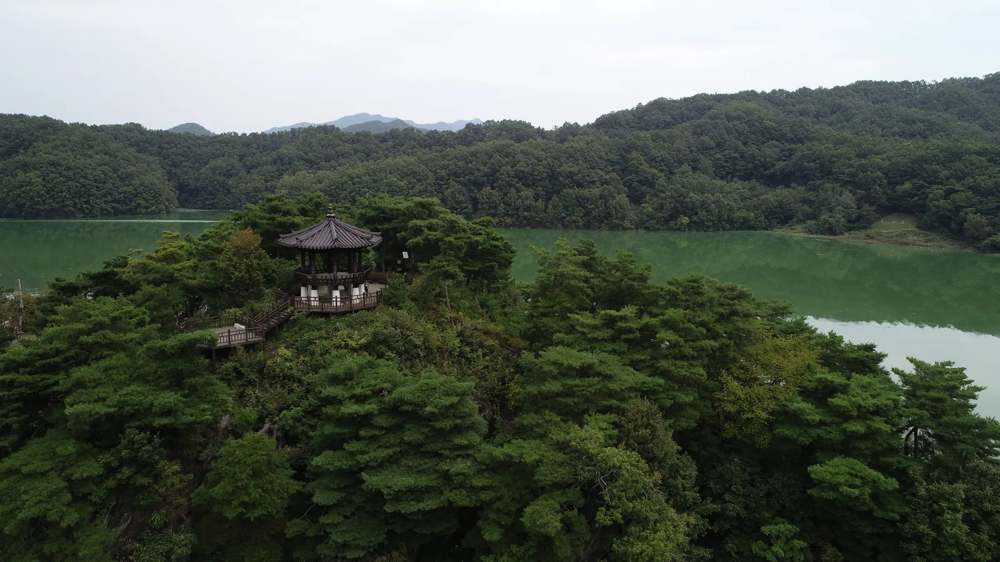
▲ 하늘에서 내려다본 부소담악 능선과 추소정. 정자 양옆으로 대청호가 감싸 돈다 사진=옥천군 문화관광(공공누리 제1유형)
1. 호수 위로 700m, 왜 부소담악인가
충북 옥천군 군북면 추소리 부소무니 마을 앞 대청호에는 바위 봉우리들이 약 700m에 걸쳐 병풍처럼 늘어서 있다. 옥천군이 꼽은 '옥천 9경' 가운데 3경이자, 금강 유역의 절경을 모은 '금강비경 11선'의 9선에도 이름을 올린 부소담악이다. 이름은 부소무니 마을 앞 물 위에 떠 있는 산이라는 뜻에서 왔다. 우암 송시열이 금강산을 축소해 놓은 것 같다며 '소금강'이라 예찬했다는 이야기가 전해지고, 2008년에는 국토해양부가 선정한 '한국을 대표할 만한 아름다운 하천 100곳'에 들었다. 입장료는 없다.
이름난 관광지처럼 대형 매표소나 상가가 늘어선 곳이 아니라, 호숫가 마을 안쪽으로 들어가야 비로소 모습을 드러내는 곳이다. 그래서 대전과 옥천 사람들에게는 익숙해도 외지에서는 아직 '숨은 명소'로 통한다. 짧게 걸어서 정자에 오르면 끝나는 코스라 가족 단위나 드라이브 중 잠시 들르기에도 부담이 적다.
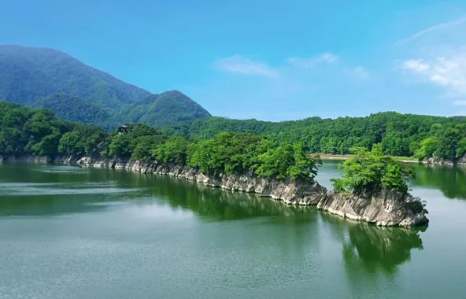
▲ 대청호 위로 길게 뻗은 부소담악의 바위 능선. 능선 왼쪽 숲 사이로 추소정 지붕이 보인다 사진=옥천군 문화관광(공공누리 제1유형)
2. 원래는 산이었다 — 대청댐이 만든 바위 병풍
부소담악은 처음부터 호수 위의 바위섬이 아니었다. 옥천군에 따르면 1980년 대청댐이 준공되고 물을 가두면서 수위가 높아졌고, 산의 낮은 부분이 물에 잠기면서 지금처럼 물 위에 바위 병풍을 둘러놓은 풍경이 됐다. 한국관광공사 대한민국 구석구석은 이곳을 송시열이 '소금강'이라 칭찬한 추소팔경의 마지막 절경으로 소개한다.
옥천군 관광명소 안내를 보면 부소담악을 품은 부소산은 해발 120m의 최고봉에서 시작해 양쪽으로 해발 90m 안팎의 봉우리를 거느리고, 끝에서 급하게 수면으로 잦아드는 총 길이 약 1.2km의 산이다. 그 가운데 물 위로 드러난 암벽 구간이 약 700m다. 가까이서 보면 세로로 쪼개진 회색 암벽이 켜켜이 서 있고, 그 위에 소나무가 뿌리를 내린 모습이 물에 그대로 비친다.
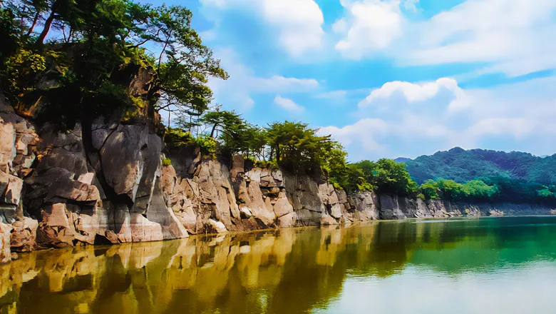
▲ 물가에서 올려다본 부소담악 암벽. 잔잔한 날에는 수면에 절벽이 그대로 비친다 사진=옥천군 문화관광(공공누리 제1유형)
능선 위 정자 추소정은 2008년 12월 17일 현판식을 마치고 일반에 공개됐다. 정자 이름은 마을 이름(추소리)에서 따왔다. 옥천군은 추소정에 오르면 추소초등학교 뒷산인 문필봉과 그 아래 호반 마을 부소무니가 한눈에 들어온다고 소개한다. 구석구석은 추소정에서 내려다본 능선을 '용이 호수 위를 미끄러지듯 나아가는 형상'에 빗댔다.
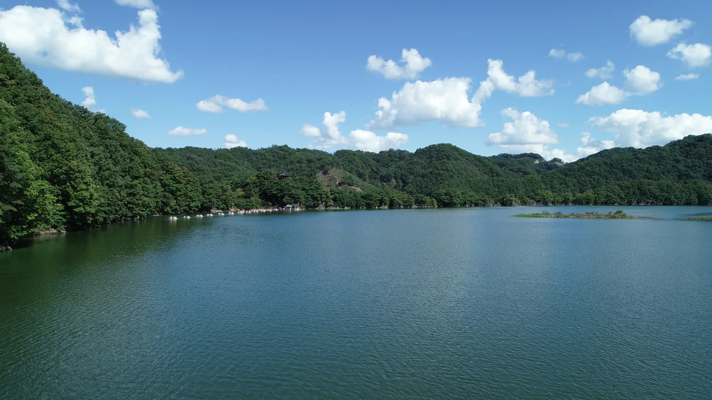
▲ 하늘에서 본 부소담악 일대 대청호. 호수 건너편 숲 가운데 추소정이 자리한 능선이 보인다 사진=옥천군 문화관광(공공누리 제1유형)
3. 가는 법과 주차 — 마을 안쪽까지 들어가야 한다
내비게이션에는 '충북 옥천군 군북면 환산로 518'을 입력하면 된다. 옥천군 안내에 따르면 부소담악 주차장은 군북면행정복지센터 앞 굴다리를 지나 우회전한 뒤 약 5km를 더 가야 나온다. 옥천군 관광명소 안내에는 위치가 '추소리(추소, 환평 방면 5.6km)'로 적혀 있다. 즉 큰길에서 벗어나 대청호를 끼고 마을 안쪽으로 한참 들어가는 구조다.
대청호오백리길 안내(대전관광공사)는 이평리에서 추소리로 넘어가는 공곡재 구간을 '구불구불'한 고갯길로 묘사한다. 대전 방아실 쪽에서 호반을 따라 넘어오는 경로라면 굽잇길이 이어진다는 뜻이다. 호숫가 마을길은 도심 도로보다 폭이 좁고 보행자도 섞이는 만큼, 마을에 들어서면 속도를 충분히 줄이는 편이 좋다.
| 항목 | 내용 | 근거 |
|---|---|---|
| 내비 주소 | 충북 옥천군 군북면 환산로 518 | 옥천군 문화관광 |
| 주차장 가는 길 | 군북면행정복지센터 앞 굴다리 통과 → 우회전 → 약 5km | 옥천군 금강비경 9선 안내 |
| 주차장→추소정 | 도보 약 600m | 옥천군 금강비경 9선 안내 |
| 마을 쪽 진입로 | 2021년 조성된 전망 데크길 약 400m(두 방향 접근 가능) | 옥천군 금강비경 9선 안내 |
| 입장료 | 무료 | 옥천군 관광명소 안내 |
| 주차 | 주차 가능, 주차요금 무료(면수는 공식 안내에 없음) | 대한민국 구석구석 |
| 화장실 | 있음 | 대한민국 구석구석 |
| 반려동물 | 전 구역 동반 가능, 목줄 착용·배변봉투 지참, 맹견은 입마개 필수 | 대한민국 구석구석 |
| 장애인 편의 | 장애인 전용 주차구역·장애인 화장실 없음 | 대한민국 구석구석 무장애 정보 |
한국관광공사 대한민국 구석구석은 부소담악에 주차가 가능하고 주차요금은 무료라고 안내하지만, 주차 면수는 공식 안내 어디에도 나와 있지 않다. 마을 안쪽의 한정된 공간이라는 점을 감안하면, 단풍철 주말에는 오전 일찍 도착하는 것이 가장 확실한 방법이다. 주차장이 찼을 때 마을 길가나 농로에 차를 세우면 주민 차량과 농기계 통행을 막게 되므로 피해야 한다. 돌아나갈 때는 같은 길을 되짚어야 하므로, 오후 늦게 들어오는 차량과 마주치는 시간대를 피하는 것도 요령이다.
올해는 공사 구간도 염두에 둘 필요가 있다. 뉴스1 보도(2026년 3월 2일)에 따르면 옥천군은 사업비 24억 원을 들여 추소리 부소담악 인근 5300㎡에 생태광장을 조성하고 있다. 3월 착공, 12월 준공 목표로 길이 60m·폭 6m 진입도로와 조경, 편의시설을 함께 만든다. 가을 방문 시점에는 공사가 진행 중일 수 있으므로, 현장 안내판과 통제 요원의 유도를 따르고 공사 차량 출입구 앞에는 차를 세우지 말자. 광장과 편의시설이 실제로 언제 개방되는지는 옥천군 문화관광과에 확인하는 것이 확실하다.
🚗 운전자 체크 포인트
· 목적지는 환산로 518, 주차장은 군북면행정복지센터 앞 굴다리 통과 후 약 5km 지점
· 호반 마을길·고갯길 구간은 굽잇길이 이어지므로 감속 운전
· 주차 면수 비공개 → 가을 주말은 오전 일찍 도착 권장
· 마을 길가·농로 임의 주차 금지(주민·농기계 통행로)
4. 둘러보는 동선 — 추소정까지 600m, 능선은 신중하게
가장 일반적인 동선은 주차장에서 약 600m를 걸어 추소정에 오른 뒤 같은 길로 돌아오는 것이다. 2021년에는 추소리 마을 쪽으로 약 400m 길이의 전망 데크길이 생겨, 마을 쪽에서도 부소담악으로 들어갈 수 있게 됐다. 갈 때와 올 때 길을 달리하면 호수를 바라보는 각도가 바뀌어 같은 바위 능선도 다르게 보인다.
한국관광공사 열린관광 안내에 따르면 추소정 전망 지점까지 가는 길은 평지와 데크길 위주지만, 정자로 오르는 마지막 경사 구간은 비포장 흙길이라 미끄럼에 주의해야 한다. 비가 온 다음 날이나 낙엽이 쌓이는 늦가을에는 접지력 좋은 운동화나 등산화를 신는 것이 좋다. 반려견과 함께 걸을 수 있지만, 구석구석은 공간에 비해 방문객이 많아 대형견은 이동이 불편할 수 있다고 안내한다.
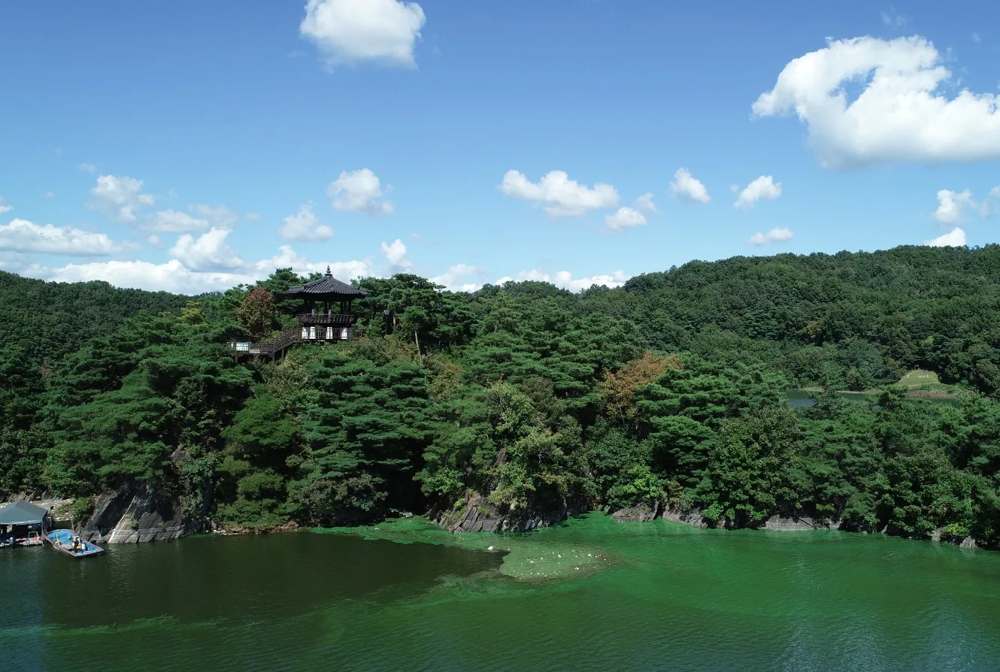
▲ 호수 쪽에서 바라본 추소정. 암벽 위 소나무 숲 사이로 정자와 데크가 자리한다 사진=옥천군 문화관광(공공누리 제1유형)
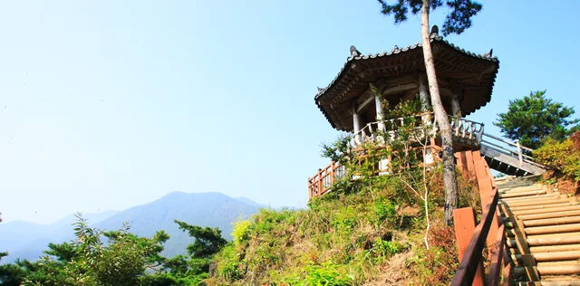
▲ 능선 위에 세워진 추소정과 정자로 오르는 나무 계단 사진=옥천군 문화관광(공공누리 제1유형)
추소정을 지나 700m 능선을 따라 더 걸을 수도 있다. 다만 구석구석은 이 능선에 대해 '협소한 능선길 아래는 시퍼런 물이 악어처럼 입을 벌리고 있는 아찔한 낭떠러지'라고 경고한다. 옥천군 관광명소 안내도 능선을 벗어나면 곧바로 낭떠러지라고 적고 있다. 아이와 함께라면 추소정 전망까지만 둘러보고, 능선 산행은 발밑이 곧 낭떠러지라는 점을 염두에 두고 신중하게 판단하는 편이 안전하다.
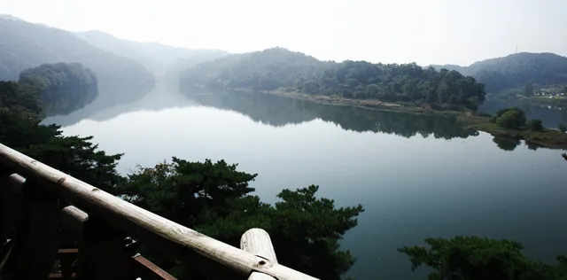
▲ 부소담악 능선의 목재 난간 너머로 내려다본 대청호 물굽이 사진=옥천군 문화관광(공공누리 제1유형)
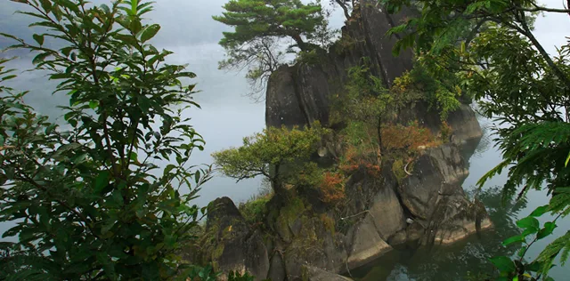
▲ 물안개 사이로 드러난 부소담악의 바위 봉우리 사진=옥천군 문화관광(공공누리 제1유형)
5. 가을에 간다면 — 시간대와 휴장일부터 확인
옥천군 '옥천 3경' 안내(2024년 9월 최종 수정)는 운영시간을 09:00~17:00으로, 정기휴장을 매주 월요일·설날·추석 당일·해빙기(2~3월)로 안내한다. 적설량 10mm 이상이거나 호우·태풍 특보가 발효되면 수시 휴장하고, 장마철과 동절기에는 운영이 유동적이라고 덧붙였다. 반면 같은 옥천군의 관광명소 안내와, 2026년 6월에 수정된 한국관광공사 열린관광 안내에는 '연중 상시 개방·연중무휴'로 적혀 있어 공식 출처끼리도 표기가 다르다. 휴장일과 기상 기준까지 구체적으로 적은 쪽은 옥천군 문화관광과가 관리하는 '옥천 3경' 안내이므로, 이 기사는 보수적으로 이 기준을 따른다. 헛걸음을 피하려면 월요일 방문은 피하고, 출발 전 옥천군 문화관광과(043-730-3413)에 운영 여부를 확인하는 것이 좋다.
올해 추석 연휴(9월 24~26일) 이후 첫 주말부터 10월 한 달은 가을 나들이 수요가 몰리는 시기다. 운영시간이 오후 5시까지로 안내된 만큼, 해가 짧아지는 10월 말~11월에는 오후 늦게 도착하면 둘러볼 시간이 빠듯해진다. 오전 일찍 도착하면 주차 부담도 덜고, 바람이 잔잔한 시간대에는 호수에 비친 절벽 반영도 또렷하게 볼 수 있다.
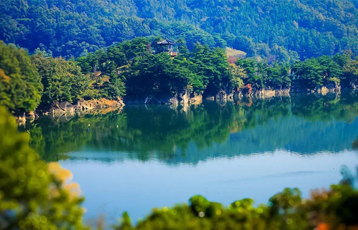
▲ 호수 건너편에서 바라본 추소정과 부소담악. 물가 곳곳에 붉게 물든 잎이 섞여 있다 사진=옥천군 문화관광(공공누리 제1유형)
대청호 주변은 아침 물안개가 잘 끼는 곳이다. 이른 아침 부소담악은 안개 속에서 바위 봉우리만 드러나는 모습을 보여 주기도 하는데, 이 경우 호숫가 도로도 시야가 짧아지므로 전조등을 켜고 천천히 들어가야 한다. 대청호가 상수원인 만큼 물가로 내려가거나 쓰레기를 남기는 행동은 삼가자.
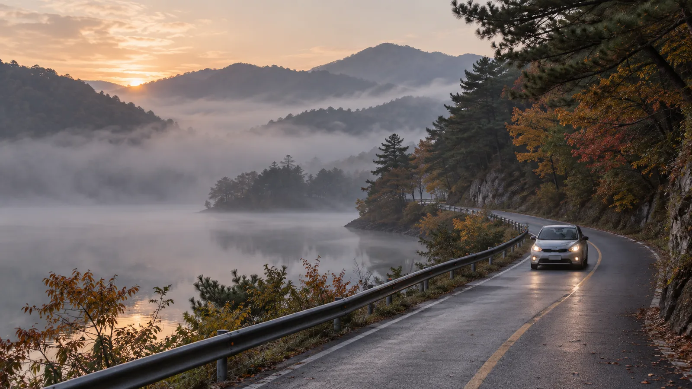
▲ 물안개 낀 가을 새벽 호숫가 굽잇길. 시야가 짧은 구간에서는 전조등을 켜고 속도를 낮춘다 이미지=AI 생성
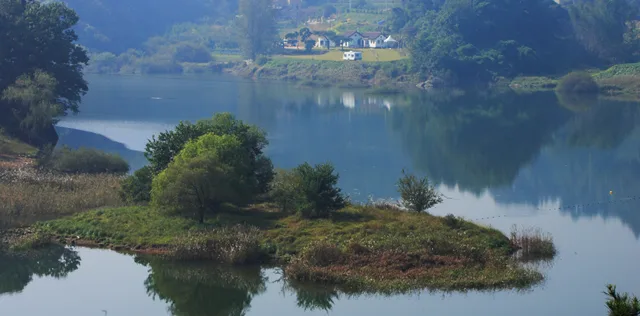
▲ 부소담악 일대 대청호의 작은 섬과 호숫가 마을 사진=옥천군 문화관광(공공누리 제1유형)
6. 함께 묶으면 좋은 코스 — 오백리길, 정지용, 용암사
걷기를 좋아한다면 부소담악은 '대청호오백리길 7구간(부소담악길)'의 종착지이기도 하다. 대전관광공사가 운영하는 대청호오백리길 안내에 따르면 7구간은 대전 동구 내탑동 꽃봉 갈림길에서 출발해 꽃봉, 수생식물학습원, 방아실 회타운, 공곡재, 보현사를 거쳐 부소담악 병풍바위와 옥천군 군북면 추소리 절골까지 이어지는 약 14km 코스로, 약 6시간이 걸린다. 차를 이용한다면 전 구간을 걷기보다 부소담악 주변만 짧게 걷는 것이 현실적이다.
옥천읍으로 나가면 시인 정지용의 생가와 정지용문학관이 옥천구읍 향수길 56 일대에 붙어 있다. 문학관은 오전 9시~오후 6시 운영하며 매주 월요일과 1월 1일, 설날, 추석날 휴관한다(문의 043-730-3408). 가곡 '향수' 영상, 시어 검색 같은 체험 공간이 있어 짧게 들르기 좋다.
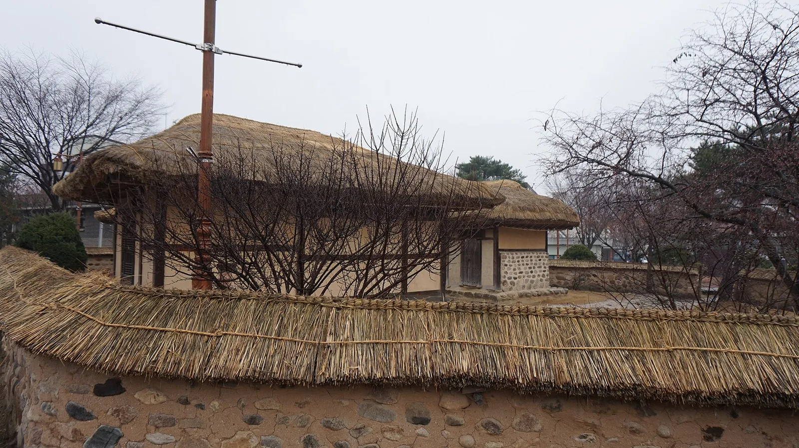
▲ 초가 돌담 너머로 보이는 옥천 정지용 생가 사진=Wikimedia Commons (Jocelyndurrey, CC BY-SA 4.0)
하루를 더 쓸 수 있다면 새벽의 용암사도 후보다. 옥천군이 '옥천 4경'으로 꼽은 용암사(옥천읍 삼청2길 400)에서는 데크길을 따라 약 180m 오르면 전망대인 운무대가 나온다. 옥천군은 이곳의 새벽 운해와 일출이 미국 CNN go가 선정한 '한국의 아름다운 50곳'에 포함됐다고 소개한다. 일출 시간에 맞춰 올라야 하므로 어두운 산길 운전이 된다는 점은 미리 감안하자.
▲ 옥천 용암사에서 바라본 일출. 종각 너머로 겹겹의 산줄기가 펼쳐진다 사진=옥천군 문화관광(공공누리 제1유형)
| 장소 | 주소 | 포인트 | 운영 |
|---|---|---|---|
| 대청호오백리길 7구간 | 대전 동구 내탑동~옥천 군북면 추소리 | 약 14km, 약 6시간, 부소담악이 종착 구간 | - |
| 정지용 생가·문학관 | 옥천읍 향수길 56 | 시인 정지용 생가, 문학 전시·체험 | 09:00~18:00, 월요일·1월 1일·설날·추석날 휴관 |
| 용암사 운무대 | 옥천읍 삼청2길 400 | 데크길 약 180m, 새벽 운해·일출 | 방문 전 확인 |
대전 쪽에서 출발한다면 반대 방향으로 묶는 방법도 있다. 대전 대덕구의 계족산 황톳길이나 서구의 장태산자연휴양림과 이어 1박 2일 대전·옥천 코스를 짜면 호수와 숲을 함께 즐길 수 있다.
7. 방문 전 체크리스트
부소담악은 규모가 크지 않은 대신 '언제, 어떻게' 가느냐에 따라 만족도가 크게 갈리는 곳이다. 출발 전 아래 항목만 점검해도 헛걸음과 주차 스트레스를 크게 줄일 수 있다.
✅ 출발 전 확인할 것
· 월요일·설날·추석 당일·해빙기(2~3월) 휴장 안내 → 운영 여부는 옥천군 문화관광과(043-730-3413)로 확인
· 운영시간 09:00~17:00 안내 기준, 늦가을엔 오후 늦은 도착 피하기
· 내비 목적지 환산로 518, 주차는 무료지만 면수는 공식 안내에 없어 주말엔 오전 일찍
· 2026년 생태광장 조성 공사(12월 준공 목표) → 현장 공사 안내·통제 따르기
· 추소정 마지막 오르막은 비포장 흙길 → 미끄럼 적은 신발
· 능선 산행은 낭떠러지 구간 주의, 아이 동반 시 추소정 전망까지만
· 강풍·호우 특보, 적설 10mm 이상이면 수시 휴장 가능